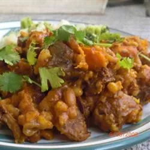

Funky Cholent Recipe

Cholent is a Shabbos lunch standard in many Jewish homes. Every family
has their signature cholent. This recipe
took me twelve years to perfect, and includes secrets I learned from ten different families. Cholent is meant to
be experimented with. Some interesting additions you may want to try are soy sauce, honey, paprika, or left-over
beef gravy.
Ingredients
- 2 teaspoons vegetable oil
- 1 large onion, chopped
- 2 cloves garlic, chopped
- 1 pound beef stew meat, cubed
- 5 large potatoes, cubed
- 1 sweet potato, cubed
- 1 (16 ounce) can baked beans
- 1 tablespoon ketchup
- 1 tablespoon barbecue sauce
- 1 tablespoon prepared yellow mustard
- 2 teaspoons dry onion soup mix
- 2 teaspoons seasoned salt
- 1 teaspoon steak seasoning
- ½ cup pearl barley
Steps
- Heat the oil in a large soup pot over medium heat; cook and stir the onion and garlic until the onion is
translucent, about 5 minutes. Add the beef stew meat, and quickly brown the pieces on all sides. Stir in the
potatoes, sweet potato, baked beans, ketchup, barbecue sauce, mustard, onion soup mix, seasoned salt, and
steak seasoning, and pour in enough water to cover. Bring the mixture to a boil, reduce to a simmer, and
cook on low heat until the beef is tender, 1 1/2 to 2 hours, stirring occasionally.
- Stir in the pearl barley, and transfer the stew to a slow cooker set on Low until the barley is tender,
about 12 hours.
Back to Home